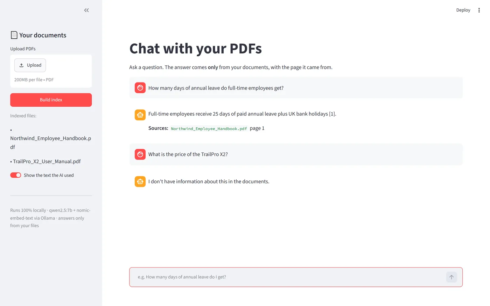
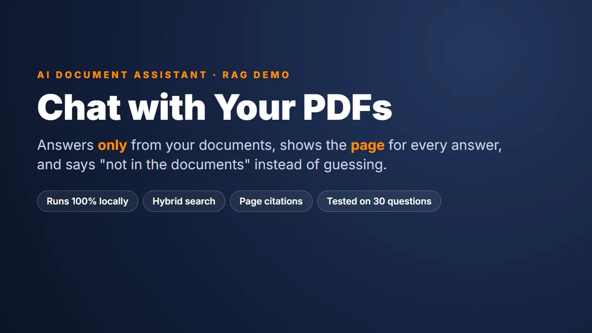
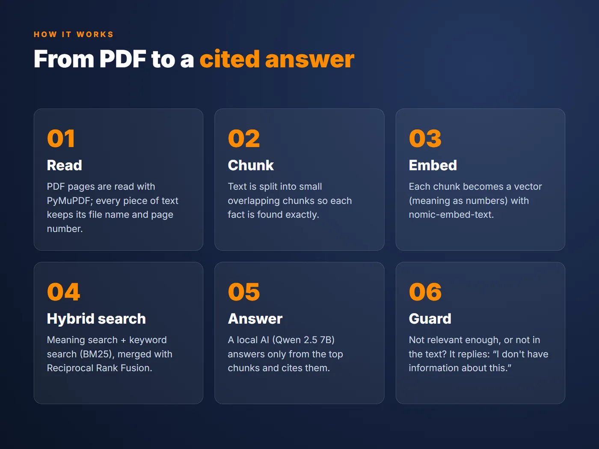
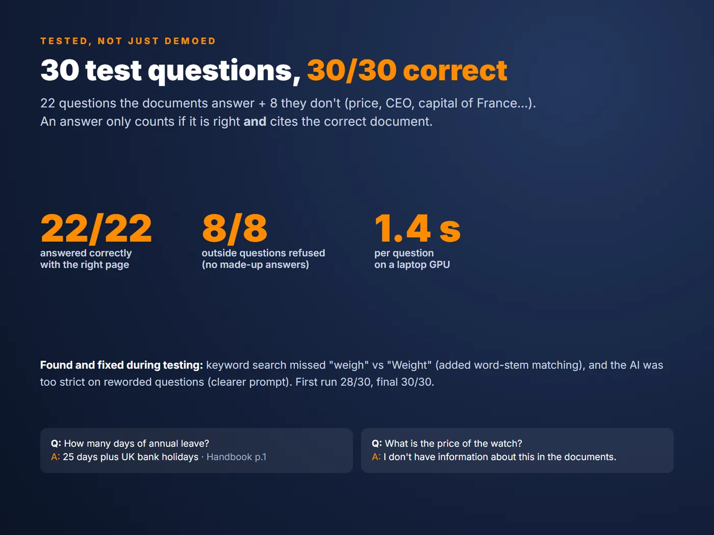

AI chatbot · RAG
Chat with your PDFs: a chatbot that only answers from your documents
A RAG chatbot that answers from your own PDFs, shows the file and page for every answer, and says so when the answer is not there. Runs 100% on your own computer.
questions answered with the right source
outside questions correctly refused
average time per answer

The problem
Most chatbots answer with confidence even when the answer is not in your documents. For a business that is a real risk: a wrong policy answer or a made-up product spec costs money and trust.
The goal: a chatbot you can check. Every answer must come from your files, point to the page, and refuse politely when the information is not there.
What I built
- Upload and index: PDFs are read page by page, so every piece of text keeps its file name and page number.
- Hybrid search: each question is matched by meaning (vector embeddings) and by keywords (BM25), and the two rankings are merged with Reciprocal Rank Fusion. Exact terms like product codes are not missed.
- Strict answering rules: the model may only use the passages it is given and must cite each one, like [1].
- Two guards against made-up answers: if nothing in the files is close to the question, the app refuses before the AI is even asked; if the AI says the answer is not there, the app returns a clear "no information" reply.
- Private by design: runs locally with Ollama (qwen2.5:7b and nomic-embed-text), so documents never leave the computer. The same pipeline can use OpenAI, Claude or Gemini by changing one function.
- Measured, not guessed: an evaluation script asks 30 questions and scores every answer automatically.
The result
Tested on 30 questions about two sample PDFs (an employee handbook and a product manual): 22 questions that are answered in the files and 8 that are not.
| Test | Result |
|---|---|
| Answered from the PDFs, with the right source | 22 / 22 |
| Questions not in the PDFs, correctly refused | 8 / 8 |
| Average time per answer (laptop GPU) | 1.4 s |
Demo video

Click to play (1.8 MB).
Screens

